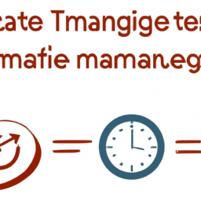

Effective Strategies for Time Management
Time management is a crucial skill that can significantly enhance productivity and reduce stress. To cultivate effective time management habits, consider implementing the following strategies.
First, set clear and achievable goals. Define what you want to accomplish in both the short and long term. Break larger tasks into smaller, manageable steps to enhance focus and track progress.
Second, prioritize tasks. Use a system like the Eisenhower Matrix to categorize tasks based on urgency and importance. This not only helps in addressing critical tasks promptly but also ensures that less important activities do not derail your schedule.
Third, establish a routine. Consistency can greatly improve time management. Create a daily schedule that allocates specific time blocks for various tasks, including breaks to prevent burnout. This habit helps in building momentum and maintaining productivity throughout the day.
Fourth, minimize distractions. Identify what commonly distracts you and find ways to eliminate or reduce these interruptions. This could include turning off notifications, setting specific times to check emails, or creating a dedicated workspace.
Finally, regularly reflect on your productivity. At the end of each week, assess what went well and what needs improvement. This reflection can guide adjustments to your strategies and enhance your time management skills over time.
By integrating these strategies into your daily routine, you can improve your efficiency and create a more balanced life, freeing up time for what truly matters.
